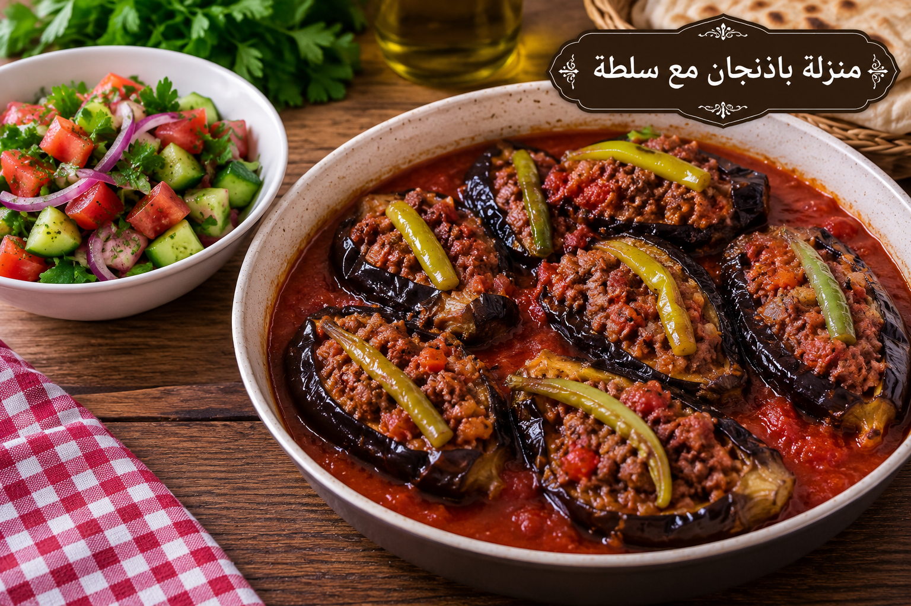

منزلة باذنجان مع سلطة
باذنجان ولحم بصلصة الطماطم

مقادير منزلة باذنجان مع سلطة
- 4 حبات باذنجان
- 400 غ لحم مفروم
- 1 بصلة
- 2 كوب صلصة طماطم
- 1½ ملعقة صغيرة ملح
- ½ ملعقة صغيرة فلفل أسود
- 1 ملعقة صغيرة بهار مشكل
- 3 ملاعق كبيرة زيت
- للّسلطة: خيار وطماطم وخس وليمون
طريقة عمل منزلة باذنجان مع سلطة
- قطعي الباذنجان ورشيه بقليل من الملح 15 دقيقة ثم جففيه وادهنيه بالزيت واشويه أو حمريه حتى يلين.
- حمري البصل واللحم وأضيفي البهار والفلفل ونصف الملح.
- رتبي الباذنجان واللحم في صينية واسكبي صلصة الطماطم المتبلة ببقية الملح.
- اخبزي على 190°م مدة 25–30 دقيقة حتى تتجانس النكهات.
- حضري السلطة قبل التقديم مباشرة بالليمون وقليل من الملح وقدميها بجانب المنزلة.